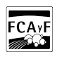

Inés Martegani
Ingeniera Forestal
Buenos Aires (Argentina)
Información de contacto
Universidad Nacional de La Plata

Facultad de Ciencias Agrarias y Forestales
Tengo interés en
Añadir Sección
Más
Acerca de
26 años
Formación académica
Ingeniería Forestal
Facultad de Ciencias Agrarias y Forestales (FCAyF) - Universidad Nacionalde La Plata (UNLP) | 2014 - 2021
Promedio con y sin aplazos: 8,21
Analista Programador Universitario
Facultad de Informática - Universidad Nacional de La Plata (UNLP) | 2021
Actualmente cursando primer año
Agroecología
Montpellier SupAgro. Montpellier, Francia | 2019
Principios de la Agroecología y Transición agroecológica - ProgramaArFAgri
Formación profesional
Capacitaciones
Curso de Facilitadores/as Agroecológicos
Capacitación virtual a cargo del Ministerio de Desarrollo Agrario de laProvincia de Buenos Aires | 2021
Argentina Programa
Ministerio de Desarrollo Productivo de la Nación y CámaraEmpresarial de Software y Servicios Informáticos (CESSI) | 2021 - presente
Producción de plantas nativas
Curso virtual destinado a viveristas del noreste bonaerense - INTA SanPedro | 2021
Teledetección Óptica
Unidad de Formación Masiva (UFM) de la Comisión Nacional de ActividadesEspaciales (CONAE) | 2020
Apicultura
Facultad de Ciencias Agrarias y Forestales (FCAyF) - Universidad Nacionalde La Plata (UNLP) | 2017
Idiomas
Inglés avanzado
Francés avanzado (B2)Alianza Francesa, BuenosAires | 2018